洛阳寻迹
——洛阳牡丹园与三彩工坊
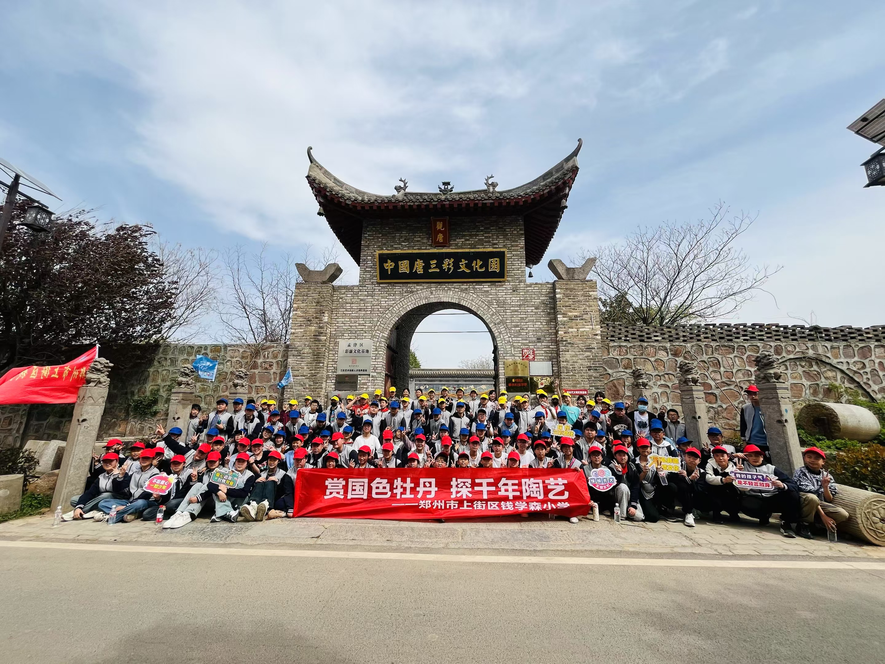 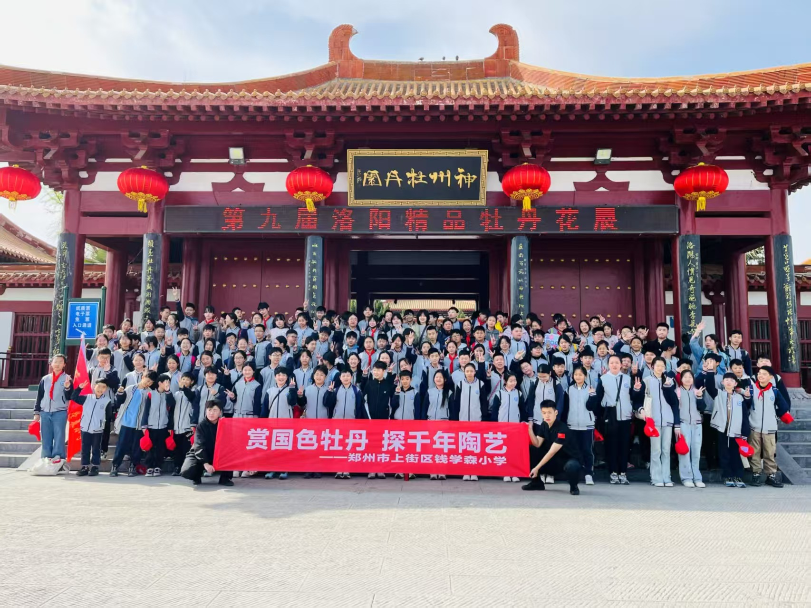 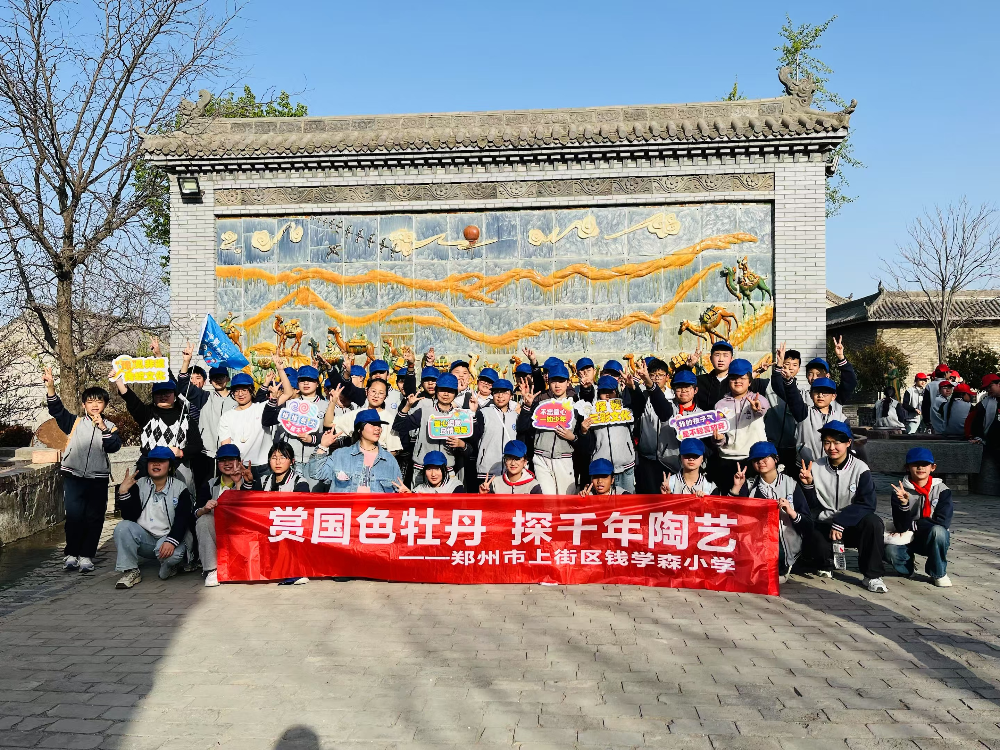- 1.牡丹花海中的毕业季
-
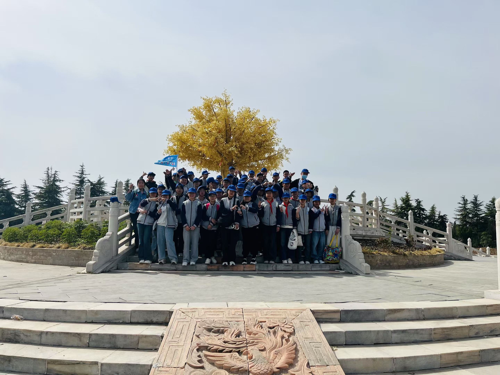
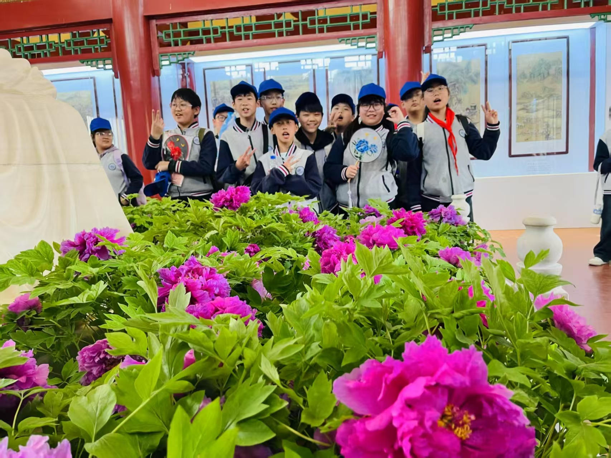
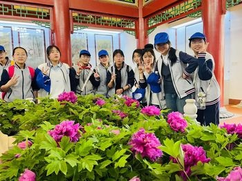
在洛阳，我们第一次见到“银丝灌顶”——画板细长如丝，基部淡紫色，微风拂过，宛如流动的水墨画。而“金丝贯顶”更是惊艳，乳白色花瓣中点缀金色花蕊，仿佛被阳光镀上一层金箔。老师说，这是洛阳独有的牡丹品种，每一棵都承载着千年的栽培智慧。我们吟诵着欧阳修的《洛阳牡丹记》，感受“花开时节动京城”的盛况。
- 2.窑变千彩盛唐风
-
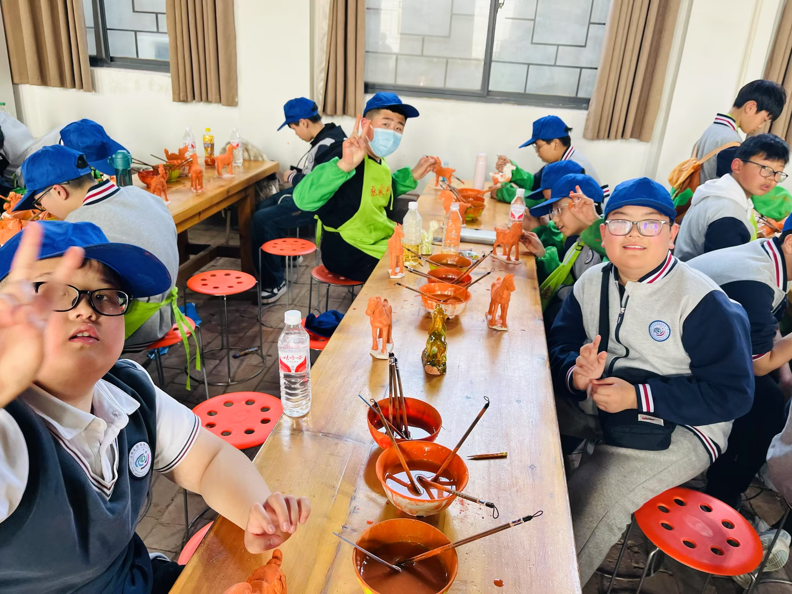
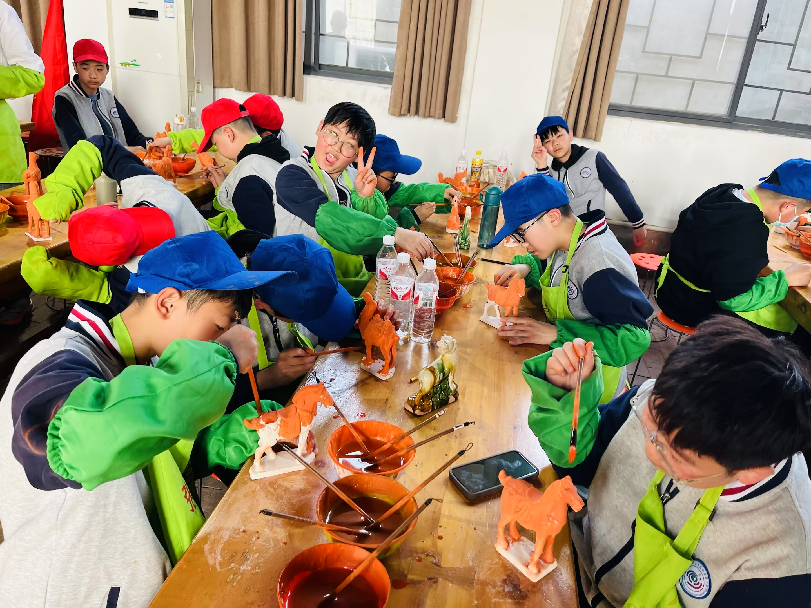
在三彩工坊，我们穿上围裙，给唐三彩上色。后来，我们收到了成品。那釉色流淌出的绿与褐，竟意外有了抽象艺术的美感。
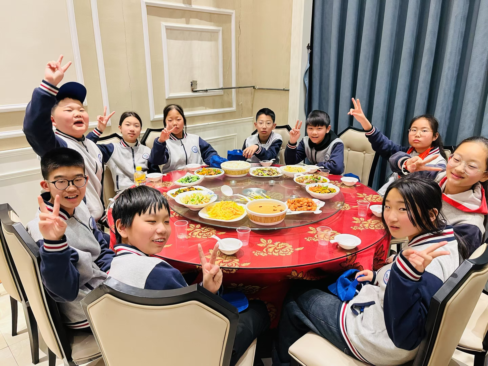 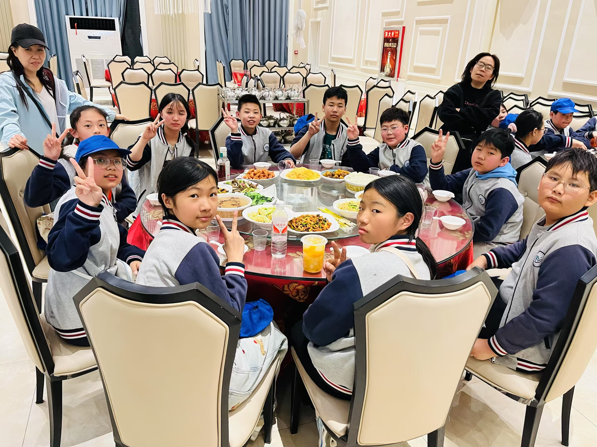 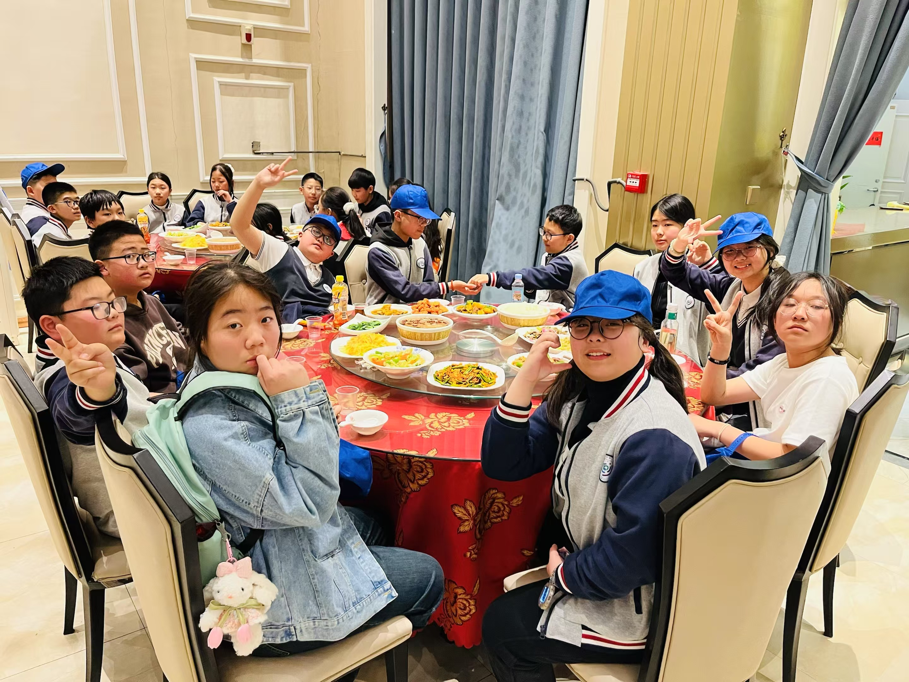